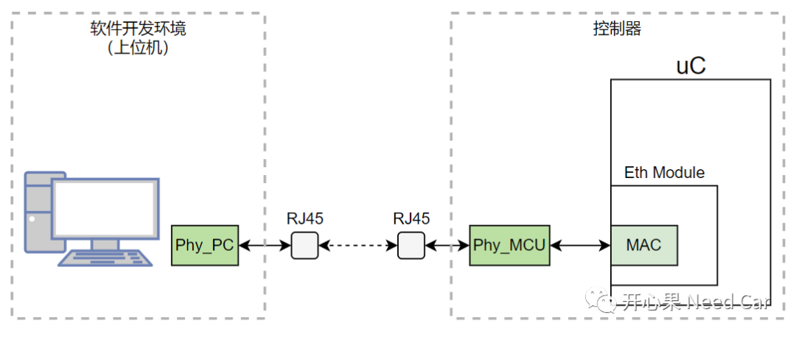
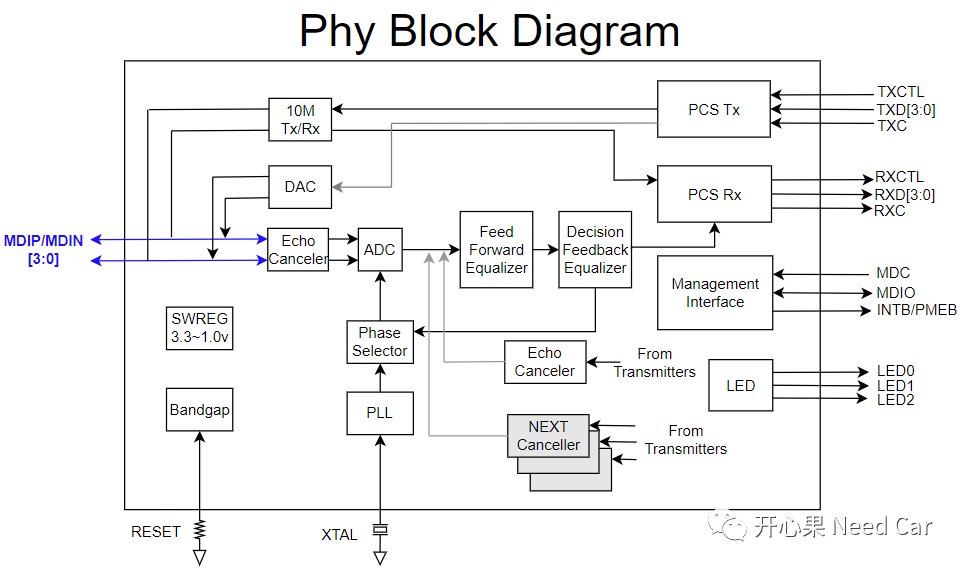
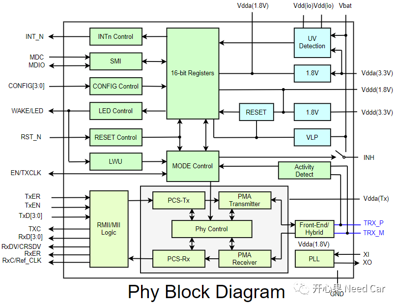
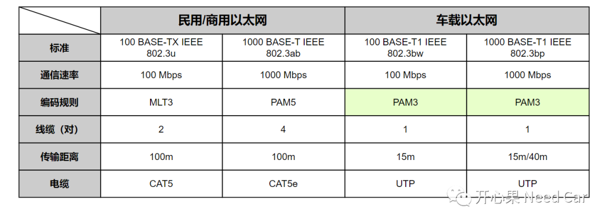
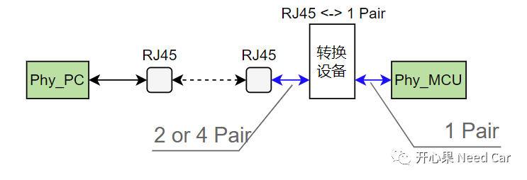
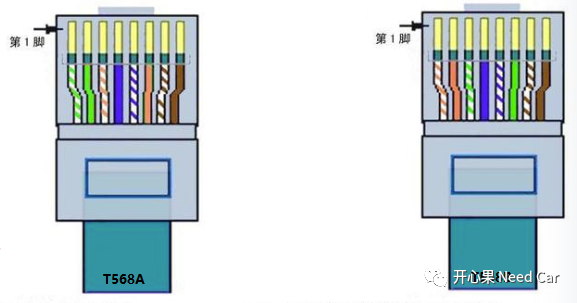
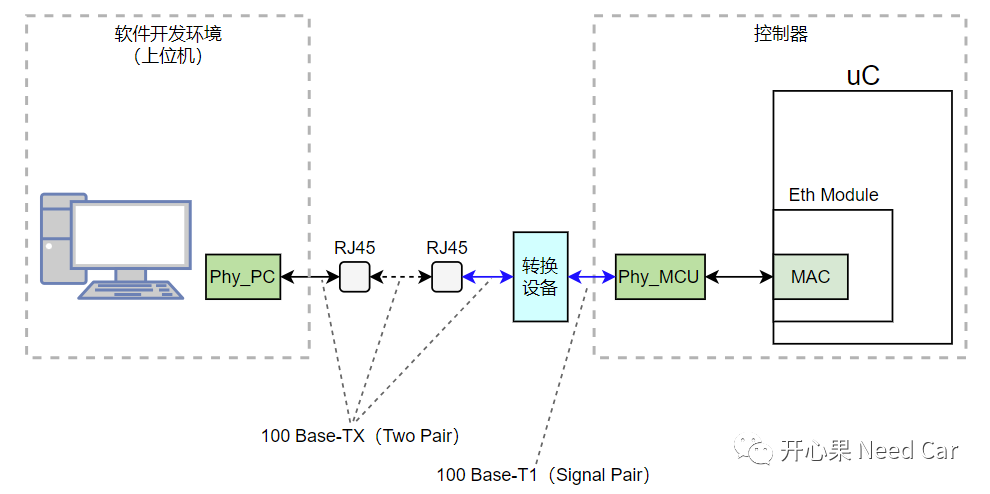

以太网的开发，最基本的操作莫属环境搭建。其中，环境搭建不仅仅是物理线束的连接，还包括编译、调试、仿真等软件环境的准备。只有这些环境处于Ready状态，开发才能事半功倍。本文，着重讨论一下RJ45如何与MCU以太网Phy连接，以便于我们理解如下几个问题：
- 车载以太网如何转RJ45（Registered Jack 45）？
先回顾一下MCU以太网的开发环境，每个开发以太网的小伙伴对于如下的配置连接应该不陌生，控制器与开发上位机的连接示意如下所示：
如上图，为了便于连接和开发，常常会使用一些以太网转换器，将控制器的以太网接线转成RJ45或者其他以太网接口。所以，搞懂两者之间的转换，首先要清楚所使用Phy的性能和特点。
RTL8211F(I)为工业级以太网Phy芯片，其内部结构如下所示：
提示：PCS（Physical Coding Sublayer，物理编码子层）RTL8211F(I)，支持的传输协议包括10 Base-T、100 Base-Tx以及1000 Base-T。各字段解释如下：
- 10、100、1000：表示通信速率，eg：100表示100Mbps；
- Base：表示传输的信号是没有经过调制的基带信号；
- T：表示传输介质为双绞线（Twist），提示：F表示光纤（Fiber）；
- X：相同传输速率下的不同标准，eg：100 Base-T后面跟X或者1或者4，TX表示传输介质是2对双绞线，T1表示传输介质是1对双绞线，T4表示传输介质是4对双绞线。
- 10 Base-T采用2对双绞线通信，通信速率10Mbps，一对发送，一对接收；
- 100 Base-TX采用2对双绞线通信，通信速率100Mbps，一对发送，一对接收；
- 1000 Base-T采用4对双绞线通信，通信速率1000Mbps，4对双向收/发。
2、车规级以太网Phy芯片
TJA1100为车规级以太网Phy芯片，其内部结构如下所示：

提示：PMA（Physical Medium Attachment，物理介质接入）。TJA1100支持100 BASE-T1通信规范，所以，TJA1100支持的通信模式：1对双绞线通信，通信速率100Mbps，一根物理线发送，一根物理线接收（如上图）。注意：100 BASE-T1是单对双绞线，工程使用中，发送和接收物理线均是单"根"，而不是"对"。除了100 BASE-T1，车规级Phy芯片也使用1000 BASE-T1，也是单对双绞线通信。
为什么车规级以太网使用的物理线束不能与工业级的保持一致呢？答：可靠性，车辆运行工况相对家庭或者办公环境更复杂多变，因此，车载以太网需要确保在复杂的外部环境下可以稳定通信。比如，车规级以太网使用100 BASE-T1，家庭、办公场所使用100 Base-TX以太网，100 BASE-T1具有更好的抗电磁干扰和抗噪声性能，以便于车辆可以在雷雨等恶劣天气中稳定通信。
这里回答文章开篇的第二个问题：汽车以太网，常用单对双绞线通信，即：100 Base-T1或者1000 Base-T1。
和以太网打交道的小伙伴，对于以太网的物理连接应该并不陌生。我们可能经历过这样的工作场景：去实车上采集数据。在实车上采数据，需要通过车辆OBD（On-Board Diagnostics）接口读取以太网数据。但是，这里你是否思考过这样的问题：笔记本电脑中的Phy_PC与MCU端的Phy_MCU一样吗？
大多数情况下，Phy_PC与Phy_MCU的结构不仅不一样，而且两者使用的双绞线对数量，采用的通信标准也有所不同，如果两者想要进行以太网通信，则两者需要经过以太网转换才能有效通信。这里的以太网转换，本质是通信标准的转换。民用/商用以太网和车载以太网对比如下所示：
所以，这就是文章开篇的第一个问题答案。关于车载以太网的编码规则（PAM3）可以参考前文《车载以太网：姗姗来迟的以太网》。如上已经讨论，MCU车规级以太网，常常使用100 Base-T1通信，如果上位机，比如：DSA（Diagnostic and Software Download Application，诊断及软件下载应用）使用100 Base-TX模式通信，则需要借助车载以太网转换器进行转换处理，示意如下：
TJ45针对工业级以太网设计，支持100 Base-TX、1000 Base-TX、1000 Base-T等通信规范。RJ45网线插头一般分为T568A线序（交叉线接法）和T568B线序（平行线接法）。
T568A线序：
通信A端从左至右：白绿／绿／白橙／蓝／白蓝／橙／白棕／棕
通信B端从左至右：白橙／橙／白绿／蓝／白蓝／绿／白棕／棕通信A、B端从左至右：白橙／橙／白绿／蓝／白蓝／绿／白棕／棕。
RJ45中，<1,2>属于1对，Pin 1属于数据发送正极（Tx+）,Pin 2属于数据发送负极（Tx-）；<3,6>属于1对，Pin 3属于数据接收正极（Rx+）,Pin 6属于数据接收负极（Rx-）。如果采用T568A线序，两个以太网通信节点进行交错配置，端点A的Pin 1连接到端点B的Pin 3，端点A的Pin 2连接到端点B的Pin 6。
所以，上位机使用RJ45与MCU车规级以太网通信时，RJ45与MCU Phy之间需要通过以太网转换器进行转换处理。以100 Base-TX与100 Base-T1转换处理为例，示意所示：
最后，在实际的MCU以太网开发过程中，公司可能为开发人员做好了线束，可能直接车载以太网接口连接，不必转换。所以，开发人员不必自己动手转接，但是，原理上，咱们还是不能留糊涂账。（2）TJA1100 100BASE-T1 PHY for Automotive Ethernet.pdf
点击下方关注，一起聊聊Autosar/嵌入式，如果需要，联系作者进群，给你更专业的解答